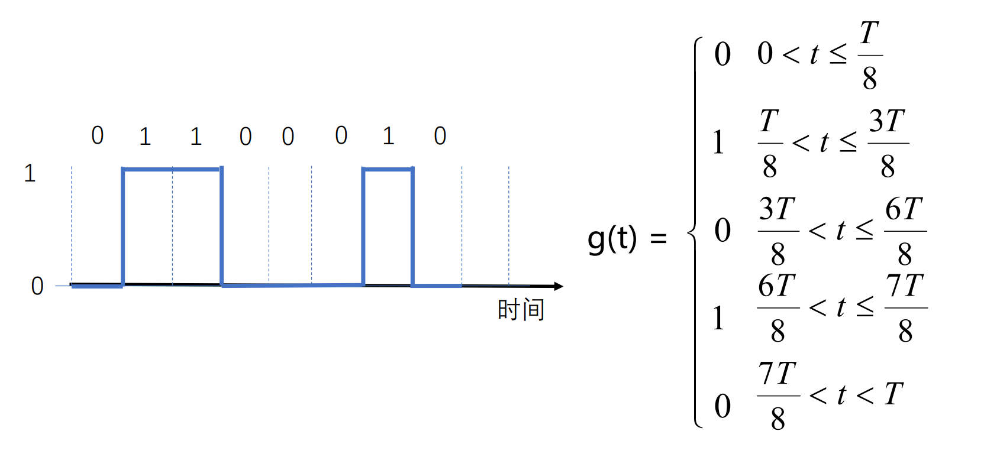

第二章 物理层
2.1 物理层基本概念
物理层功能
- 位置 - 网络体系结构的最底层
- 功能 - 传输数据比特流
物理层设备
- 数据终端设备(DTE) - 数据处理和转发，源点和终点
- 数据电路终结设备(DCE) - 信号变换和编码，面向传输
- DTE 和 DCE 之间的接口 - 物理层的协议
物理层协议
- 机械特性 - 接线器的形状和尺寸等
- 电气特性 - 电路特性、负载要求……发送信号的电平
- 功能特性 - 描述接口执行的功能，定义接线器每一引脚的作用
- 过程特性 - 之名对于不同功能的各种可能事件出现的顺序
- 常用标准
- 点对点通信(EIA RS-232-C 标准，EIA RS-449 标准等)
- 广播通信线路 - 一条公共通信线路连接多个结点(802.3……)
2.2 数据通信基础
干扰后，方波难以辨识
- 数据通信研究信号在通信信道上传输时的数学表示及其所受到的限制
- 傅里叶分析 - 将周期函数分解成若干项正弦和余弦函数的和
以二进制编码 ０１１０００１０ 为例，进行傅里叶分析

- 波形叠加地越多，越接近方波
欧拉公式算傅里叶系数 - 复平面上向量的叠加
- 频谱（spectrum）是一个信号所包含的频率的范围
- 信号的绝对带宽等于频谱的宽度
- 许多信号的带宽是无限的，然而信号的主要能量集中在相对窄的频带内，这个频带被称为有效带宽，或带宽（bandwidth）
- 信号的信息承载能力与带宽有直接关系，带宽越宽，信息承载能力越强
- 信号在信道上传输时，对不同傅立叶分量的衰减不同，引起输出失真
- 信道有截止频率 fc，0 ~ fc 的振幅衰减较弱，fc 以上的振幅衰减厉害，这主要由信道的物理特性决定，0 ~ fc 是信道的有限带宽
波特率（baud）和比特率（bit）的关系
- 波特率：每秒钟信号变化的次数，也称调制速率
- 比特率：每秒钟传送的二进制位数
- 波特率与比特率的关系取决于信号值与比特位的关系
例：每个信号值可表示3位，则比特率是波特率的3倍；每个信号值可表示1位，则比特率和波特率相同
- 有限的带宽限制数据传输速率
奈魁斯特定理
- 最大数据传输率 = \(2Hlog_2V (bps)\)
- 任意信号通过一个带宽为 Ｈ 的低通滤波器，则每秒采样 2H 次就能完整地重现该信号，信号电平分为 V 级（带宽单位为 Hz）
香农定理
- 信噪比 - 信号（S）与噪声（N）功率之比 10log10S/N，单位：分贝
- 带宽为 H 赫兹，信噪比为 S/N 的任意信道的最大数据传输率为：\(Hlog_2(1 + S/N) (bps)\)
- 此式是利用信息论得出的，具有普遍意义
- 与信号电平级数、采样速度无关
- 此式仅是上限，难以达到
信息量
- 根据香农理论，一条消息包含信息的多少称为信息量
- 一条消息所荷载的信息量等于它所表示的事件发生的概率p的倒数的对数
传输方式
数据编码技术
- 不归零编码
- 曼彻斯特编码 - 有时钟
- 差分曼彻斯特编码
频带传输
复用技术
码片复用
编码 - 检错码和纠错码
- 码字
- 码率 - 码字中不含冗余部分所占的比例
- 海明距离 - 两个码字之间不同对应比特的数目
- 检错 - 海明距离 d+1
- 纠错 - 海明距离 d+2
典型检错码
- 奇偶校验码 - 保证 1 的个数为奇数/偶数
- 校验和
- 发送方 - 两个数据求和，再取反，随数据一同发送
- 接收方 - 三个数据求和，如果不是全 1，则出错
- 循环冗余校验 CRC - 选择 n+1 位二进制位模式 G，产生 n 位校验码
- 数据除以 G 得到的余数是校验码
典型纠错码
- 海明码
停等协议
有错信道上的单工停等式协议
- 计时器 timer - 规定时间内没收到确认帧，超时重发
如果确认帧丢失，发送重复帧，如何区分？
加一个序列号（SEQ: sequence number）
例：0 1 交错发
- 效率的评估
- 帧长 F = frame size (bits)
- （适合）帧数 2
- 带宽 B = channel capacity (bandwidth in bits/second)
- 发送时延 = 数据长度（bit）/信道宽度（bit/s）
- 传播时延 = 信道长度（m）/电磁波在信道上的传播速率（m/s）
- link utilization <= w/(1+2BD)
停等协议的效率问题
- 长时延时，信道利用率低
- 只能有一个没有确认的帧在发送中
- 长肥网络
- 一种提高效率的方法：使用更大的帧（出错概率更高）
滑动窗口协议
- 基本思想 - 发送方和接收方都具有一定容量的缓冲区，发送方在收到确认之前可以发送多个帧
- 循环重复使用有限的序列号
- 累计确认：不必对收到的分组逐个发送确认，而是对按序到达的最后一个分组发送确认
回退 N 协议
- 出错全部重发
- 接收窗口为 1，只能按顺序
- 优点：连续发送提高信号利用率
- 缺点：出错之后即使后面有正确的，也要重发
- 收到 ACK - 累计确认
选择重传协议
- 数据帧计时器超时 - 出错
- 接收端丢弃出错帧
- 发送端重传
PPP 协议
- 转义
- 组网方式
不同的接入情形
- 点对点
- 共用通道
常见的局域网拓扑
- 总线
- 共同点 - 共享信道
信道利用率（静态分配）
- D0 - 空闲时的时延
- D - 当前时延
- U 利用率
- D=D0/(1-U)
- 当用户急剧增加时，每个用户时延大幅增加
ALOHA 协议
- 想发就发
非持续性 CSMA
- 侦听到信道空闲则发送，反之等待
持续性 CSMA
- 侦听到信道空闲则发送
- 如果信道忙，持续侦听，一旦空闲立即发送
- 发生冲突，等待一个随机分布的时间再回到第一步
- 具有感知冲突的能力
- 好处：延迟时间少于非持续性
- 问题：两个以上的站等待发送，一旦空闲一定冲突
p-持续性 CSMA
- 如果介质空闲，以 p 的概率发送，以 (1-p) 的概率延迟一个时间单元发送
- 如果信道忙，持续侦听，一旦空闲重复上一步
- 如果已推迟，重复上上步
可以很大概率错开冲突，但延迟高
传播延迟造成的冲突
CSMA/CD - 1-持续性 CSMA
令牌
二进制倒计数协议
- 信道利用率 \(d(d+log_2N)\)
对称协议
- 所有的站点以相同的概率 p 获得信道
- k 个站点，有一个站点成功的概率： \(kp(1-p)^{k-1}\)
- 最优解：p=1/k
- 减少竞争者
有限竞争协议
自适应树搜索协议
- 所有站点同时竞争
- 只有一个站点申请，则获得信道
- 否则下一竞争时隙，一半站点参与竞争，下下一次另一半竞争
- 所有站点构成一棵完全二叉树
- 改进策略很多
经典以太网
- MAC 子层协议
二进制指数后退
- 确定基本退避时间槽 - 冲突多，slot 长
- 重传次数 k = min[重传次数，10]
以太网性能
- P = F/B，F 为帧长，B 为带宽
- 信道效率
交换式以太网
- 以前：集线器（HUB）组建以太网
- 现在：核心是交换机（Switch）- 在数据链路层，检查 MAC 帧的目的地址对收到的帧进行转发
- 混杂模式
快速以太网 - 100Mbps
千兆以太网
理想网桥 - 透明、即插即用
MAC 地址表的构建 - 逆向学习源地址
链路层交换机
- 存储转发
4.4 数据链路层交换
生成树协议
最大特点：无环
-
根桥选举
- 首先比较优先级
- 优先级一样时比较 MAC 地址
-
为每个非根桥选取一个根端口
- 比较每个端口到根桥的路径开销
- 选最小的
- 一样时比较端口 ID
根路径开销
- 根桥的根路径开销为 0
- 非根桥
- 为每个网段确定一个指定端口
- 其他阻塞
端口状态的的迁移
- 阻塞（）-> 监听（）-> 学习（）-> 传播（）
- 默认的 forwarding delay 是 15 秒
- 实际导致网络连通性需要 30 秒才能恢复
生成树的某“枝”断掉了，会重新构造生成树
重新构建生成树太慢 -> 快速生成树协议（几百毫秒）
虚拟局域网
广播域
4.5 无线局域网
电磁波为传输介质
设计目标
- 使用无授权的频段（ISM 频段）
- 面向高速率应用
两个重要组织：IEEE 802.11 & WIFI 联盟
CSMA/CA
竞争窗口（CWindow）的选择
-
根据信道的闲、忙，选出等待时间的范围，等待时间在这个范围里随机选取
-
差错检测：32 位 CRC 校验（与以太网相同）
- 采用停等机制
- 如果达到最大重传限制，丢弃该帧，报告上层
RTS-CTS 机制（可选机制）
无线局域网的构建与管理
基础架构模式
- 通过 AP 接入有线网络
- 如何关联 AP？
- BSSID：AP 的 MAC 地址
被动扫描
主动扫描
认证过程
To calculate the data rate, we can use the Shannon-Hartley theorem for the maximum data rate \(C\) of a communication channel:
where: - \(B\) is the bandwidth of the channel in Hz, - \(S/N\) is the signal-to-noise ratio (SNR).